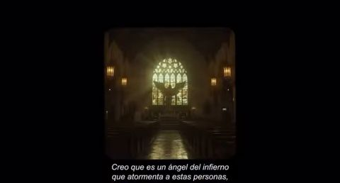
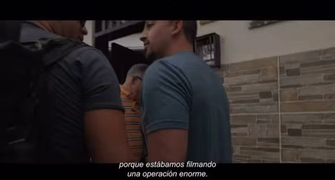
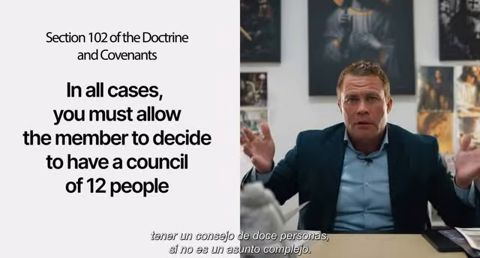
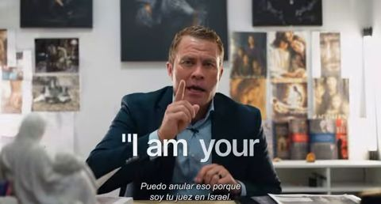
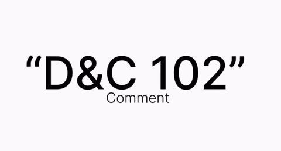
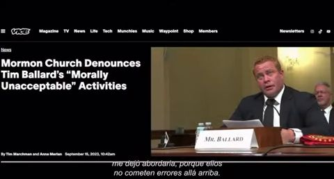
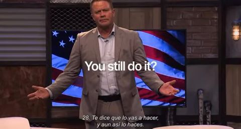
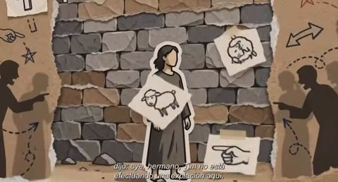
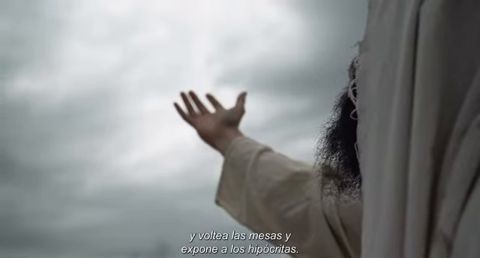
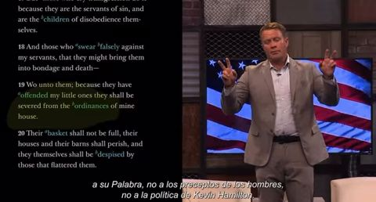

The SRA Loop · Backfire
Sunday School at 2 AM
At 2:15 a.m. on September 26, Tim Ballard posted a 14-minute "clip from Backfire, Episode 3" to Facebook. His caption: "It's a doozy!" Here is what's in it.
Where the clip comes from
- The audio is one continuous, unedited stretch of his YouTube "Episode 3: The Kangaroo Court," from 3:07 in, matched every 20 seconds. In his original September 4 Backfire video that's about 0:48 to 1:02.
- The picture matches Episode 3 frame for frame.
- So every graphic below is part of Backfire itself, as he released it. That's different from his September 24 "Clip from Backfire" (Part 4), where about 20 images were added over unchanged audio just for Facebook.
The visual aids
Twenty of the graphics in the clip, each with what he's saying as it appears:
"…proceeds to tell you that your spouse has had penetrative sex with a woman. You know it's false…"

"I think she's an angel from hell that torments these people…"

"…in 2022 because we were filming a massive operation…"

his reading of D&C 102

"…I can override that because I am your judge in Israel…"

"…this is Joseph commenting on section 102…"
"countless fellow beings… were injured"
"…a subject that usually is limited to a dining room table after church…"

"…from the tabloid magazine, from Doug Anderson…"

"…2nd Nephi 28. He tells you you're gonna do it, and he's still doing it."
"Is that what Jesus would do? Lie for the greater good…"

"…'Tim's not effectuating an atonement here. He's trying to rescue children.'"

"…and he tosses tables, and he exposes people who are hypocrites."
"…amen to the priesthood… mental gymnastics…"
"…what a great judge in Israel he is. This is disgusting, guys."
"He's a high councilman. I'm your judge in Israel. No witnesses."
"…Your covenants are dead. Your children no longer have a father…"
"Go read Doctrine and Covenants 102… then 121"
"…amen to his priesthood."

"…not to Kevin Hamilton's policy."
What this page does not claim
It doesn't say whether his statements are true, and it doesn't say where the illustrative images came from (the actress, the church interior, the paper-cut art, the reaching arm). Those haven't been checked yet. It shows what the clip contains and when it was posted.